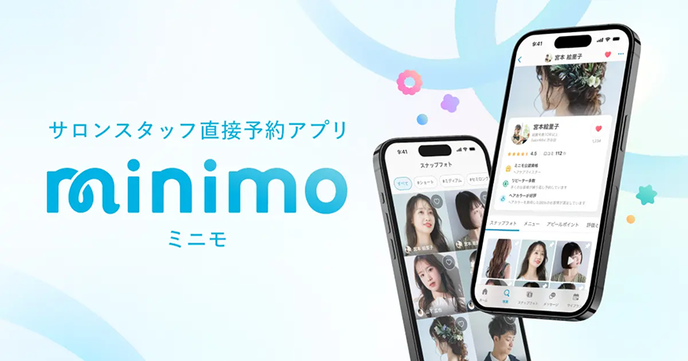
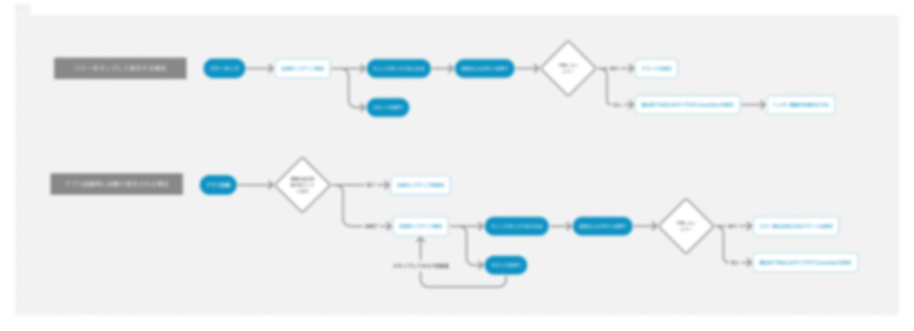
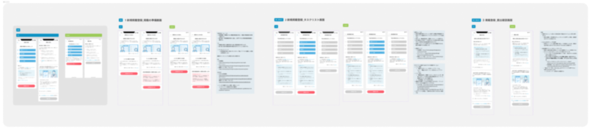
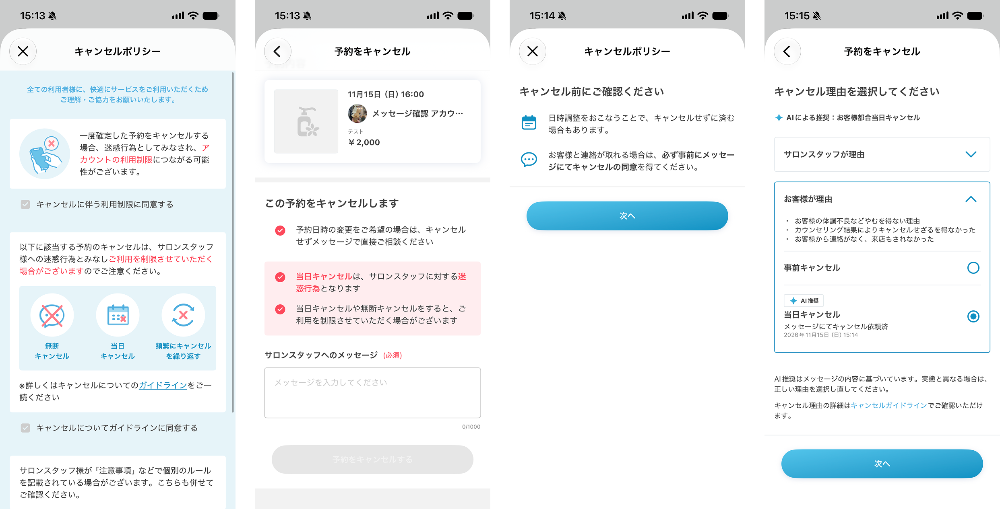
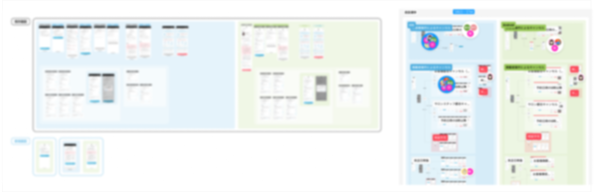
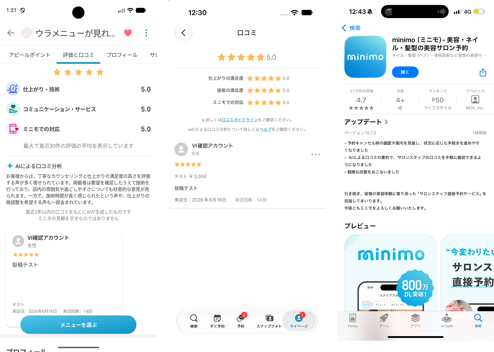
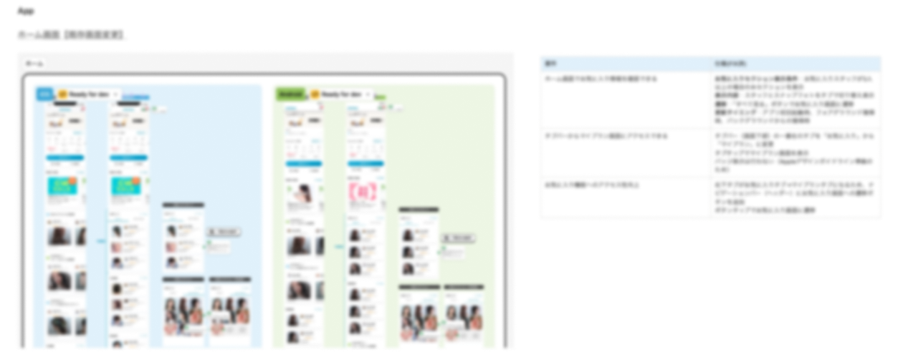
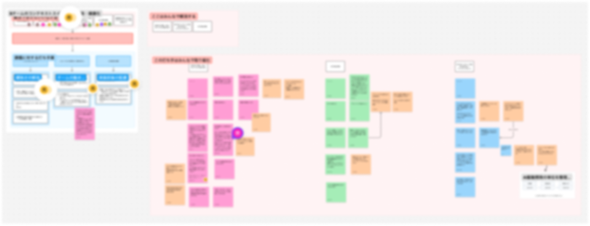

minimo

施策をデザインして仕様検討からUI設計、実装・リリース
美容サロン予約サービス「minimo」の一般利用者向け・施術者向けアプリで、複数の施策を並行して設計。 施策ごとの目的や要件だけでなく、実装可能性、iOS / Androidの仕様差分、既存プロダクトとの整合性、 スケジュールや対応範囲まで確認しながら、チームが開発を進めやすい状態整え、最適なデザインをチームで考え、チームのパフォーマンスを上げていく
- - 期間：2025年6月〜から継続中
- - 役割：プロダクトデザイナー
- - プロダクト：美容サロン予約サービス（一般利用者向け / 施術者向けアプリ）iOS / Android
- - 使用ツール：Figma / Notion / XCode / Android studio / Claude codeなど
- - エンジニア5名、PM1名、デザイナー1名
施策の目的に対して、背景を理解して合意を取り、何が最適かを考えてUIを作成する
施策ごとに異なる課題や制約を整理しながら、企画から実装・リリースまでのデザインを進める minimoはC向けの予約をして施術を受けるお客様側、B向けの施術を提供する掲載者側の機能が提供されている 施策にごとに、どのユーザーに対して何をどう提供するのが最適か・施策として何を解消したいのかを整理してアウトプットを出していく
施策チームでのプロダクトデザインフロー
UIを作る工程だけではなく、不明点・疑問点は早めに対応して、使い勝手も技術的にも最良の形を考えていく 施策が実装・リリースされるまでのプロセス全体に関わっています
後から問題になりそうな論点を自分から提起。必要な関係者との認識合わせの場も設定
既存の再設計や他施策とのスケジュール競合、既存データとの整合性も含めて検討
レビュー時には範囲・観点・期日を整理し、レビュアーが判断しやすいにする
すべてを一度の施策で対応するのではなく、後続施策との重複や二重作業を避けるため、「今回やらないこと」も含めて対応範囲を整理
リリース後に問題が残らない状態にする


全体像を決め、デザインを作る
キャンセルフローの場合
予約サービスにとって、キャンセルされることは日常によくあることであると同時に、残念体験につながる要因になります。
minimo のキャンセル率は業界の水準と大きく変わらず20%前後、、件数を減らす施策ではユーザーへのインパクトが小さいと判断。
一方で、キャンセルのたびに生まれる「残念な体験」は、サービスの仕組みそのものから起きていました。
- サロン側：当日の急なキャンセルや、連絡のない無断キャンセル
- お客様側：サロンの都合による急なキャンセル
- 双方：実際の状況と違うキャンセル種別で処理されてしまい、本来は受けるべきでないペナルティや手数料が発生する
- ・アプローチ
- キャンセル種別を「誰の都合か」で「どのタイミングによるものか」で整理し、名前とキャンセルフローの見せ方を一新
- 時間帯に応じて選べる種別を絞り、迷いが生まれない動線にした
- メッセージのやり取りから AI が適切な種別を提案し、実際と違う種別を選ぼうとしたときに気づける仕組みを導入（最終判断はユーザーに委ねる）
お客様とサロンの双方が、状況に合った正しいキャンセルを迷わず選べる状態をつくり、 両者の満足度とサービスへの信頼を高めることを目指しました。


成果・学び
今回の施策は11/9にリリースしたことでの効果計測、ユーザーボイスの収集によっての評価は未実施
全体フロー・アカウント種別に応じて、適せ値にキャンセル種別を見せるにあたり、アコーディオンのインタラクション設計もminimoにおいたは初めてだったため、より細かく画面遷移とフローを検討を進められた。
また、時間軸・アカウント種別に応じた分岐が多かったことから、主要な画面はコンポーネント化し、作業の効率化を図れたことで修正・追加も容易に設計できた点な学びとなった。
AI駆動のモバイルクライアント開発
AI要約機能のデザインと実装
投稿される口コミを一定条件を元に200文字以内の要約として表示する。ユーザーの情報収集の手助けをし、予約転換率（CVR）を上げることを目的とした施策
チームがAI駆動でスペックドキュメントを作成する進め方をとっていたため、その開発フローに則りクライアント開発を実施
仕様書・開発計画自体もskillsを元に生成されるためレビューから入り、変更内容をリポジトリにプッシュする。


施策チームでPM活動
判断軸の整理
既存のチームでは、仕様書がなく各々のこう思う・クライアントやFigmaのどちらを正とするかの判断も揺れていた場面があった
施策の大筋の機能要件が決まっていた中、詳細の画面仕様が整っていない状況から画面の条件分岐を含む仕様書を作成
開発・QA期間の情報の拠り所になることを目的に対応を進行。 QA期間において、タスクの確認・推進を行い、曖昧な点があればつどつど言語化と調整を実施。

チームの進み方を改善する
施策を進める中で、個別タスクの問題ではなく、チームの進行方法そのものにボトルネックになる場面が多く発生していた。まずは正社員同士で課題のヒアリング・段取り調整から、 業務委託を巻き込んでのチーム全体ので課題の整理と打ち手の検討を実施。そこから、チームにおいては、下記を基本方針として、PBIの基準に見直しまで運用フローに乗るところまで到達。
- 1. タスクの粒度を小さくし、バッファを考慮して設計する
- 2. スプリント計画で必須対応分は完了形態まで決め切る
- 3. キャッチアップ系タスクは「実装できるレベルで理解している」を完了基準とする
- 4. ユーザーストーリーと仕様書の読み合わせで、共通認識のベースラインを整える

デザイナーの役割をUIの外側まで広げる
実装の制約を後から受け取るのではなく、デザイン初期から実装可能性・スケジュール・リポジトリの作法まで確認することで、手戻りを減らせることはあり、いかにして自分から情報を取りにいくかは必要なフローに含まれていく
そのため、チームの進み方や他プロダクトのデザイン確認は本来の担当範囲ではないこともありますが、デザインの品質・チームの活動に寄与できることは先手を打って対応する
デザイナーの役割を「UIを作ること」だけではなく、デザインを通じてチームが正しく・早く意思決定できる状態をつくることまで広げて考えています。